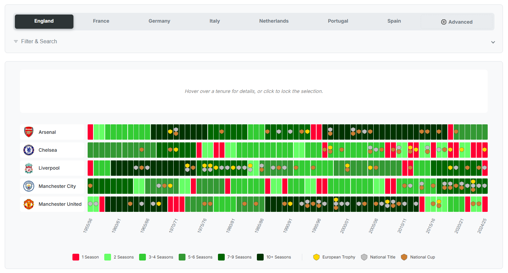

What makes a manager the greatest of all time? Is it the sheer volume of silverware, gleaming in a packed trophy cabinet? Is it the tactical revolution that changes how the game is played? Or is it the ability to conquer Europe, to win anywhere, or to build a dynasty that outlasts a generation?
The debate is endless, and every fan has their champion. But what does the data say? Using a rich dataset spanning nearly 70 years and 35 of Europe's elite clubs, we can move beyond gut feeling and analyse greatness through different lenses. We've identified key pillars of managerial excellence: Sustained Dominance, European Glory, Global Success, and perhaps most importantly in the modern era, Winning Efficiency.
This is not a definitive ranking, but an exploration of the different forms of greatness, a data-driven "Mount Rushmore" of the men who have shaped modern football.
The Kings of Longevity: Building an Empire
This is the realm of relentless, sustained dominance, where winning year after year was the standard. When we look at the pure volume of trophies won, one name stands as the benchmark for longevity: Sir Alex Ferguson. His haul of 25 major trophies with Manchester United is a monument to adaptation, building multiple legendary teams over 26 years. His prizes-per-season ratio of 0.93 is incredibly impressive over such a long period.
Alongside him stand other titans who defined their eras at a single club. Miguel Muñoz, the architect of the great Real Madrid side of the 50s and 60s, managed the club for 14 years, securing 12 trophies, including two European Cups. And Arsène Wenger, with his 22-year tenure at Arsenal, is another prime example. While his trophy count (12) and efficiency (0.41) are lower, his impact in building a club identity and overseeing a stadium move solidifies his status as a true dynasty-builder. These men represent the classic model of greatness: achieving consistent, long-term success through loyalty and evolution.
Data Focus: The Trophy Kings
Top 10 coaches based on total trophies won within the dataset, including their prizes-per-season ratio.
- 1. Pep Guardiola - 25 Trophies (1.56 per season)
- 2. Sir Alex Ferguson - 25 Trophies (0.93 per season)
- 3. José Mourinho - 20 Trophies (1.18 per season)
- 4. Giovanni Trapattoni - 17 Trophies (0.71 per season)
- 5. Udo Lattek - 16 Trophies (0.94 per season)
- 6. Carlo Ancelotti - 15 Trophies (0.68 per season)
- 7. Louis van Gaal - 13 Trophies (0.72 per season)
- 8. Arsène Wenger - 12 Trophies (0.41 per season)
- 9. Ottmar Hitzfeld - 12 Trophies (0.92 per season)
- 10. Miguel Muñoz - 12 Trophies (0.92 per season)
The Modern Super-Coaches: Efficiency and Global Conquest
While the old guard built their legends over decades, the modern era has produced a new breed of super-coach, defined by intense, concentrated dominance and the ability to win anywhere.
No one embodies this more than Pep Guardiola. The data positions him as arguably the most complete manager of the 21st century. He matches Ferguson's staggering 25 trophies but has done so in a far shorter timeframe, resulting in a phenomenal prizes-per-season ratio of 1.56. He is not just a winner; he is a tactical revolutionary, a "Globetrotter" with league titles in Spain, Germany, and England, and a "Perfectionist" who has achieved the historic treble twice. He combines volume, efficiency, and game-changing impact in a way no other manager has.
His great rival, José Mourinho, is the ultimate pragmatic conqueror. With 20 trophies and an excellent efficiency rating of 1.18, he has proven he can win in any environment, from his underdog Champions League victory with Porto to his treble with Inter. Then there is Carlo Ancelotti, the specialist's specialist. While his volume and efficiency are lower in our data, his record five Champions League titles and his unique achievement of winning the league in all five major European countries make him a master of global success and European glory. This group, which also includes multi-league winners like Louis van Gaal (Netherlands, Spain, Germany) and Giovanni Trapattoni (Italy, Germany, Portugal), represents a different kind of greatness: the ability to export a winning formula.
The Revolutionaries: More Than Just Trophies
Finally, there are managers whose greatness is difficult to capture in numbers alone, or who achieved such unique feats that they stand apart.
Zinedine Zidane falls into this category. His achievement of winning three consecutive Champions League titles with Real Madrid is an anomaly in the modern game, a feat of knockout-tournament mastery that may never be repeated.
And then there is Johan Cruyff. Though his trophy count is more modest than the serial winners, his influence is arguably greater than any other. He didn't just manage Barcelona; he installed a footballing philosophy, a DNA that directly led to the success of his disciples, including Guardiola and Rijkaard. His legacy is not measured in silverware, but in the very way modern football is played and understood. The German duo of Udo Lattek and Ottmar Hitzfeld can also be seen in this light; they didn't just win, they established a culture of dominance at Bayern Munich and Borussia Dortmund that defined German football for generations.
Conclusion: A New GOAT for a New Era?
So, who is the greatest? The ultimate debate may now be a Mancunian affair: Ferguson's United dynasty versus Guardiola's City machine, two different models of success that have defined their respective eras. The data doesn't give one simple answer, but it does illuminate a shift. While Ferguson set the 20th-century benchmark for sustained, single-club dominance, Pep Guardiola has redefined what managerial greatness looks like in the 21st century.
His unprecedented combination of winning volume, revolutionary tactics, staggering efficiency, and proven success across multiple top leagues makes him, based on the data, the most complete candidate for the modern "GOAT" title. While the romanticism of Ferguson's long reign and the European genius of Ancelotti provide compelling counterarguments, Guardiola's record represents a new, higher-velocity era of managerial dominance. The debate will rage on, but the data suggests the benchmark has been raised.
The Mount Rushmore of Modern Management
If we were forced to carve four faces into the mountain, representing the different pillars of managerial greatness, our data points to these titans:
Sir Alex Ferguson
The Architect
For unparalleled longevity, sustained dominance, and building an empire at a single club.
Pep Guardiola
The Revolutionary
For tactical innovation, unprecedented efficiency, and redefining what it means to win in the modern era.
Carlo Ancelotti
The Globetrotter
For supreme European success and the unique ability to conquer all of Europe's top five leagues.
Johan Cruyff
The Godfather
For a philosophical impact that transcends trophies and shaped generations of the world's best coaches and players.
Explore the Data Yourself
Our interactive tool allows you to explore club histories, filter by nationality, or track a manager's entire career path. Dive in and discover the patterns for yourself.
Launch the Interactive Visualization